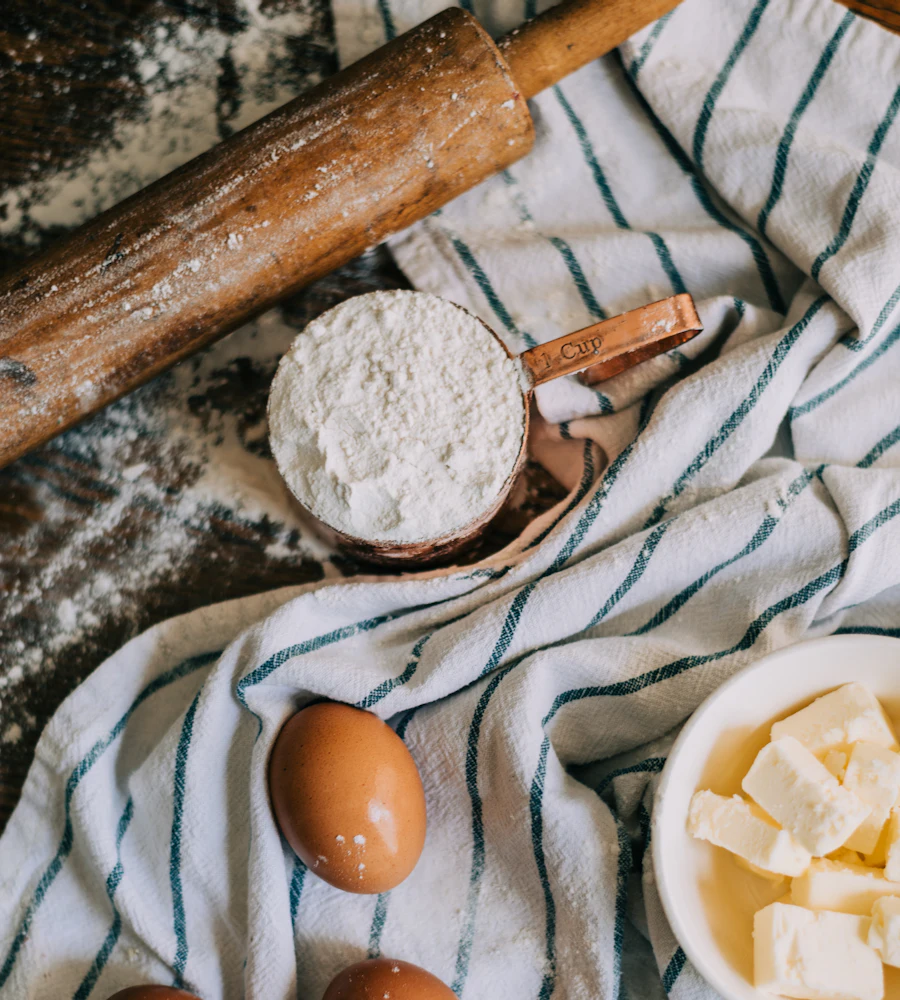
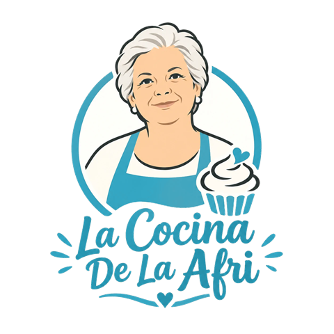

Recetario familiar
Las recetas de casa, apuntadas con cariño
La colección de recetas de la Afri: bizcochos, dulces de sartén, platos de cuchara y comidas de diario, ordenados para cocinarlos paso a paso.


Para empezar
Un poco de todo
Una selección variada del recetario: algo dulce, algo de cuchara y algo para el día a día.
Explorar
Por categorías
Elige qué te apetece cocinar hoy.
Sobre la Afri
La mamá de sus hermanos
— Hecho con cariño y un poquito de azúcar (poquito, que hay que cuidarse)